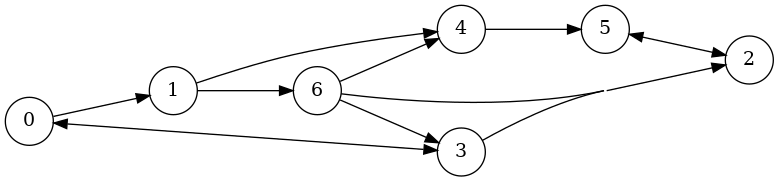

Package pygraphblas
pygraphblas is a python extension that bridges The GraphBLAS
API with the Python
programming language.
It uses the
CFFI library to wrap the low
level GraphBLAS API and provides high level Matrix and
Vector Python types that make GraphBLAS simple and easy.
See the Github README for details on how to install pygraphblas. Once installed, the library can be imported for use:
>>> from pygraphblas import *
The core idea of the GraphBLAS is the mathematical duality between a
graph and a Matrix.
As illustrated here, a graph can be
expressed as a Matrix and vice versa.
Matrix is the primary object of The GraphBLAS API.
There are many ways to contstruct them, but a simple approach is to
provide three lists of data, the first are are lists of the row and
column positions that define the begining and end of a graph edge, and
the third list is the weight for that edge:
>>> I = [0, 0, 1, 1, 2, 3, 3, 4, 5, 6, 6, 6]
>>> J = [1, 3, 4, 6, 5, 0, 2, 5, 2, 2, 3, 4]
>>> V = [True for _ in range(len(I))]
>>> M = Matrix.from_lists(I, J, V)
>>> print(M)
0 1 2 3 4 5 6
0| t t | 0
1| t t| 1
2| t | 2
3| t t | 3
4| t | 4
5| t | 5
6| t t t | 6
0 1 2 3 4 5 6
>>> from pygraphblas.gviz import draw_graph
>>> g = draw_graph(M, show_weight=False,
... filename='/docs/imgs/Matrix_from_lists_intro')

GraphBLAS is a sparse Linear
Algebra API optimized
for processing graphs encoded as sparse matrices and vectors.
In
addition to common real/integer Matrix algebra
operations, GraphBLAS supports over a thousand different
Semiring algebra operations,
that can be used as basic building blocks to implement a wide variety
of graph algorithms. See
Applications
from Wikipedia for some specific examples.
The core operation of Linear Algebra is Matrix Multiplication. In this GraphBLAS duality, this is an operation along the edges of a graph from nodes to their adjacenct neighbors, taking one step in a Breadth First Search across the graph:
pygraphblas leverages the expertise in the field of sparse matrix programming by The GraphBLAS Forum and uses the SuiteSparse:GraphBLAS API implementation. SuiteSparse:GraphBLAS is brought to us by the work of Dr. Tim Davis, professor in the Department of Computer Science and Engineering at Texas A&M University. News and information can provide you with a lot more background information.
Expand source code
"""pygraphblas is a python extension that bridges [The GraphBLAS
API](http://graphblas.org) with the [Python](https://python.org)
programming language. It uses the
[CFFI](https://cffi.readthedocs.io/en/latest/) library to wrap the low
level GraphBLAS API and provides high level `pygraphblas.matrix.Matrix` and
`pygraphblas.Vector` Python types that make GraphBLAS simple and easy.
See the [Github README](https://github.com/Graphegon/pygraphblas) for
details on how to install pygraphblas. Once installed, the library can
be imported for use:
>>> from pygraphblas import *
The core idea of the GraphBLAS is the mathematical duality between a
graph and a `pygraphblas.matrix.Matrix`. As illustrated here, a graph can be
expressed as a `pygraphblas.matrix.Matrix` and vice versa.
`pygraphblas.matrix.Matrix` is the primary object of The GraphBLAS API.
There are many ways to contstruct them, but a simple approach is to
provide three lists of data, the first are are lists of the row and
column positions that define the begining and end of a graph edge, and
the third list is the weight for that edge:
>>> I = [0, 0, 1, 1, 2, 3, 3, 4, 5, 6, 6, 6]
>>> J = [1, 3, 4, 6, 5, 0, 2, 5, 2, 2, 3, 4]
>>> V = [True for _ in range(len(I))]
>>> M = Matrix.from_lists(I, J, V)
>>> print(M)
0 1 2 3 4 5 6
0| t t | 0
1| t t| 1
2| t | 2
3| t t | 3
4| t | 4
5| t | 5
6| t t t | 6
0 1 2 3 4 5 6
>>> from pygraphblas.gviz import draw_graph
>>> g = draw_graph(M, show_weight=False,
... filename='/docs/imgs/Matrix_from_lists_intro')

GraphBLAS is a sparse [Linear
Algebra](https://en.wikipedia.org/wiki/Linear_algebra) API optimized
for processing graphs encoded as sparse matrices and vectors. In
addition to common real/integer `pygraphblas.matrix.Matrix` algebra
operations, GraphBLAS supports over a thousand different
[Semiring](https://en.wikipedia.org/wiki/Semiring) algebra operations,
that can be used as basic building blocks to implement a wide variety
of graph algorithms. See
[Applications](https://en.wikipedia.org/wiki/Semiring#Applications)
from Wikipedia for some specific examples.
The core operation of Linear Algebra is [Matrix
Multiplication](https://en.wikipedia.org/wiki/Matrix_multiplication).
In this GraphBLAS duality, this is an operation along the edges of a
graph from nodes to their adjacenct neighbors, taking one step in a
[Breadth First
Search](https://en.wikipedia.org/wiki/Breadth-first_search) across the
graph:
pygraphblas leverages the expertise in the field of sparse matrix
programming by [The GraphBLAS Forum](http://graphblas.org) and uses
the
[SuiteSparse:GraphBLAS](http://faculty.cse.tamu.edu/davis/GraphBLAS.html)
API implementation. SuiteSparse:GraphBLAS is brought to us by the work
of [Dr. Tim Davis](http://faculty.cse.tamu.edu/davis/welcome.html),
professor in the Department of Computer Science and Engineering at
Texas A&M University. [News and
information](http://faculty.cse.tamu.edu/davis/news.html) can provide
you with a lot more background information.
"""
from .base import (
lib,
ffi,
GxB_INDEX_MAX,
GxB_IMPLEMENTATION,
GxB_SPEC,
options_get,
options_set,
)
lib.LAGraph_init()
from .matrix import Matrix
from .vector import Vector
from .scalar import Scalar
from .semiring import build_semirings
from .binaryop import build_binaryops
from .unaryop import build_unaryops
from .monoid import build_monoids
build_semirings()
build_binaryops()
build_unaryops()
build_monoids()
from .types import (
FP64,
FP32,
FC64,
FC32,
INT64,
INT32,
INT16,
INT8,
UINT64,
UINT32,
UINT16,
UINT8,
BOOL,
)
from . import semiring
from . import binaryop
from . import unaryop
from . import monoid
from . import descriptor
from . import gviz
__all__ = [
"lib",
"ffi",
"GxB_INDEX_MAX",
"GxB_IMPLEMENTATION",
"GxB_SPEC",
"options_set",
"options_get",
"Matrix",
"Vector",
"Scalar",
"FP64",
"FP32",
"FC64",
"FC32",
"INT64",
"INT32",
"INT16",
"INT8",
"UINT64",
"UINT32",
"UINT16",
"UINT8",
"BOOL",
"monoid",
"unaryop",
"binaryop",
"semiring",
"types",
"descriptor",
"gviz",
]
ffi = ffi # global assign hack to fool pdoc
""" CFFI C Foreign Function Interface. For internal low-level use only. """
lib = lib
""" Raw interface to SuiteSparse library. For internal low-level use only. """
GxB_INDEX_MAX = GxB_INDEX_MAX
"""Maximum key size for SuiteSparse, defaults to `2**60`."""
GxB_IMPLEMENTATION = GxB_IMPLEMENTATION
""" Tuple containing GxB_IMPLEMENTATION (MAJOR, MINOR, SUB) """
GxB_SPEC = GxB_SPEC
""" Tuple containing GxB_SPEC (MAJOR, MINOR, SUB) """
def run_doctests():
import sys, doctest
this = sys.modules[__name__]
for mod in (this, matrix, base):
doctest.testmod(mod, optionflags=doctest.ELLIPSIS)
__pdoc__ = {
"base": False,
"build": False,
}Sub-modules
pygraphblas.binaryop-
Contains all automatically generated BinaryOps from CFFI.
pygraphblas.descriptor-
Contains all automatically generated Descriptors from CFFI.
pygraphblas.gviz-
Helper functions for drawing graphs and matrices with graphviz in doctests and Jupyter notebooks.
pygraphblas.matrix-
High level wrapper around GraphBLAS Matrices.
pygraphblas.monoid-
Contains all automatically generated Monoids from CFFI …
pygraphblas.scalar-
GraphBLAS Scalar (SuiteSparse Only)
pygraphblas.semiring-
Contains all automatically generated Semirings from CFFI …
pygraphblas.types-
Pythonic GraphBLAS type wrappers including User Defined Types …
pygraphblas.unaryop-
Contains all automatically generated UnaryOps from CFFI.
pygraphblas.vector-
High level wrapper around GraphBLAS Vectors.
Global variables
var GxB_IMPLEMENTATION-
Tuple containing GxB_IMPLEMENTATION (MAJOR, MINOR, SUB)
var GxB_INDEX_MAX-
Maximum key size for SuiteSparse, defaults to
2**60. var GxB_SPEC-
Tuple containing GxB_SPEC (MAJOR, MINOR, SUB)
var ffi-
CFFI C Foreign Function Interface. For internal low-level use only.
var lib-
Raw interface to SuiteSparse library. For internal low-level use only.
Functions
def options_get()-
Get global library options. See SuiteSparse User Guide.
>>> pprint(options_get()) {'bitmap_switch': [...], 'burble': ..., 'chunk': ..., 'format': ..., 'hyper_switch': ..., 'nthreads': ...}Expand source code
def options_get(): """Get global library options. See SuiteSparse User Guide. >>> pprint(options_get()) {'bitmap_switch': [...], 'burble': ..., 'chunk': ..., 'format': ..., 'hyper_switch': ..., 'nthreads': ...} """ nthreads = ffi.new("int*") _check(lib.GxB_Global_Option_get(lib.GxB_GLOBAL_NTHREADS, nthreads)) chunk = ffi.new("double*") _check(lib.GxB_Global_Option_get(lib.GxB_GLOBAL_CHUNK, chunk)) burble = ffi.new("int*") _check(lib.GxB_Global_Option_get(lib.GxB_BURBLE, burble)) hyper_switch = ffi.new("double*") _check(lib.GxB_Global_Option_get(lib.GxB_HYPER_SWITCH, hyper_switch)) bitmap_switch = ffi.new("double[8]") _check(lib.GxB_Global_Option_get(lib.GxB_BITMAP_SWITCH, bitmap_switch)) format = ffi.new("GxB_Format_Value*") _check(lib.GxB_Global_Option_get(lib.GxB_FORMAT, format)) return dict( nthreads=nthreads[0], chunk=chunk[0], burble=burble[0], hyper_switch=hyper_switch[0], bitmap_switch=list(bitmap_switch), format=format[0], ) def options_set(nthreads=None, chunk=None, burble=None, hyper_switch=None, bitmap_switch=None, format=None)-
Set global library options.
This options are passed directly to SuiteSparse so see the SuiteSparse User Guide for details.
-
nthreads: Globals number of threads to use. -
chunk: Chunk size for dividing parallel work. -
burble: Switch to enable "burble" debug output. SuiteSparse must be compiled with burble turned on. -
hyper_switch: Controls the hypersparsity of the internal data structure for a matrix. The parameter is typically in the range 0 to 1. -
bitmap_switch: Controls when to switch to bitmap format. -
format: Default global matrix data format.
Expand source code
def options_set( nthreads=None, chunk=None, burble=None, hyper_switch=None, bitmap_switch=None, format=None, ): """Set global library options. This options are passed directly to SuiteSparse so see the SuiteSparse User Guide for details. - `nthreads`: Globals number of threads to use. - `chunk`: Chunk size for dividing parallel work. - `burble`: Switch to enable "burble" debug output. SuiteSparse must be compiled with burble turned on. - `hyper_switch`: Controls the hypersparsity of the internal data structure for a matrix. The parameter is typically in the range 0 to 1. - `bitmap_switch`: Controls when to switch to bitmap format. - `format`: Default global matrix data format. """ if nthreads is not None: nthreads = ffi.cast("int", nthreads) _check(lib.GxB_Global_Option_set(lib.GxB_GLOBAL_NTHREADS, nthreads)) if chunk is not None: chunk = ffi.cast("double", chunk) _check(lib.GxB_Global_Option_set(lib.GxB_GLOBAL_CHUNK, chunk)) if burble is not None: burble = ffi.cast("int", burble) _check(lib.GxB_Global_Option_set(lib.GxB_BURBLE, burble)) if hyper_switch is not None: hyper_switch = ffi.cast("double", hyper_switch) _check(lib.GxB_Global_Option_set(lib.GxB_HYPER_SWITCH, hyper_switch)) if bitmap_switch is not None: bitmap_switch = ffi.new("double[8]", bitmap_switch) _check(lib.GxB_Global_Option_set(lib.GxB_BITMAP_SWITCH, bitmap_switch)) if format is not None: format = ffi.cast("GxB_Format_Value*", format) _check(lib.GxB_Global_Option_set(lib.GxB_FORMAT, format)) -
Types
class BOOL-
GraphBLAS Boolean Type.
Expand source code
class BOOL(Type): """GraphBLAS Boolean Type.""" gb_type = lib.GrB_BOOL C = "_Bool" one = True zero = False typecode = "B" numba_t = numba.boolean @classmethod def format_value(cls, val, width=2): f = "{:>%s}" % width if not isinstance(val, bool): return f.format(val) return f.format("t") if val is True else f.format("f") @classmethod def to_value(cls, cdata): return bool(cdata) class FC32-
GraphBLAS 32 bit float complex.
Expand source code
class FC32(Type): """GraphBLAS 32 bit float complex.""" prefix = "GxB" one = complex(1.0) zero = complex(0.0) gb_type = lib.GxB_FC32 C = "float _Complex" numba_t = numba.complex64 class FC64-
GraphBLAS 64 bit float complex.
Expand source code
class FC64(Type): """GraphBLAS 64 bit float complex.""" prefix = "GxB" one = complex(1.0) zero = complex(0.0) gb_type = lib.GxB_FC64 C = "double _Complex" numba_t = numba.complex128 class FP32-
GraphBLAS 32 bit float.
Expand source code
class FP32(Type): """GraphBLAS 32 bit float.""" one = 1.0 zero = 0.0 gb_type = lib.GrB_FP32 C = "float" typecode = "f" numba_t = numba.float32 class FP64-
GraphBLAS 64 bit float.
Expand source code
class FP64(Type): """GraphBLAS 64 bit float.""" one = 1.0 zero = 0.0 gb_type = lib.GrB_FP64 C = "double" typecode = "d" numba_t = numba.float64 class INT16-
GraphBLAS 16 bit signed integer.
Expand source code
class INT16(Type): """GraphBLAS 16 bit signed integer.""" gb_type = lib.GrB_INT16 C = "int16_t" typecode = "i" numba_t = numba.int16 class INT32-
GraphBLAS 32 bit signed integer.
Expand source code
class INT32(Type): """GraphBLAS 32 bit signed integer.""" gb_type = lib.GrB_INT32 C = "int32_t" typecode = "l" numba_t = numba.int32 class INT64-
GraphBLAS 64 bit signed integer.
Expand source code
class INT64(Type): """GraphBLAS 64 bit signed integer.""" gb_type = lib.GrB_INT64 C = "int64_t" typecode = "q" numba_t = numba.int64 class INT8-
GraphBLAS 8 bit signed integer.
Expand source code
class INT8(Type): """GraphBLAS 8 bit signed integer.""" gb_type = lib.GrB_INT8 C = "int8_t" typecode = "b" numba_t = numba.int8 class Matrix (matrix, typ=None)-
GraphBLAS Sparse Matrix
This is a high-level wrapper around the GrB_Matrix C type using the cffi library.
A Matrix supports many possible operations according to the GraphBLAS API. Many of those operations have overloaded operators.
Operator Description Default A @ B Matrix Matrix Multiplication type default PLUS_TIMES semiring v @ A Vector Matrix Multiplication type default PLUS_TIMES semiring A @ v Matrix Vector Multiplication type default PLUS_TIMES semiring A @= B In-place Matrix Matrix Multiplication type default PLUS_TIMES semiring v @= A In-place Vector Matrix Multiplication type default PLUS_TIMES semiring A @= v In-place Matrix Vector Multiplication type default PLUS_TIMES semiring A | B Matrix Union type default SECOND combiner A |= B In-place Matrix Union type default SECOND combiner A & B Matrix Intersection type default SECOND combiner A &= B In-place Matrix Intersection type default SECOND combiner A + B Matrix Element-Wise Union type default PLUS combiner A += B In-place Matrix Element-Wise Union type default PLUS combiner A - B Matrix Element-Wise Union type default MINUS combiner A -= B In-place Matrix Element-Wise Union type default MINUS combiner A * B Matrix Element-Wise Intersection type default TIMES combiner A *= B In-place Matrix Element-Wise Intersection type default TIMES combiner A / B Matrix Element-Wise Intersection type default DIV combiner A /= B In-place Matrix Element-Wise Intersection type default DIV combiner Note that all the above operator syntax is mearly sugar over various combinations of calling
Matrix.mxm(),Matrix.mxv(),Vector.vxm(),Matrix.eadd(), andMatrix.emult().Expand source code
class Matrix: """GraphBLAS Sparse Matrix This is a high-level wrapper around the GrB_Matrix C type using the [cffi](https://cffi.readthedocs.io/en/latest/) library. A Matrix supports many possible operations according to the GraphBLAS API. Many of those operations have overloaded operators. Operator | Description | Default --- | --- | --- A @ B | Matrix Matrix Multiplication | type default PLUS_TIMES semiring v @ A | Vector Matrix Multiplication | type default PLUS_TIMES semiring A @ v | Matrix Vector Multiplication | type default PLUS_TIMES semiring A @= B | In-place Matrix Matrix Multiplication | type default PLUS_TIMES semiring v @= A | In-place Vector Matrix Multiplication | type default PLUS_TIMES semiring A @= v | In-place Matrix Vector Multiplication | type default PLUS_TIMES semiring A \\| B | Matrix Union | type default SECOND combiner A \\|= B | In-place Matrix Union | type default SECOND combiner A & B | Matrix Intersection | type default SECOND combiner A &= B | In-place Matrix Intersection | type default SECOND combiner A + B | Matrix Element-Wise Union | type default PLUS combiner A += B | In-place Matrix Element-Wise Union | type default PLUS combiner A - B | Matrix Element-Wise Union | type default MINUS combiner A -= B | In-place Matrix Element-Wise Union | type default MINUS combiner A * B | Matrix Element-Wise Intersection | type default TIMES combiner A *= B | In-place Matrix Element-Wise Intersection | type default TIMES combiner A / B | Matrix Element-Wise Intersection | type default DIV combiner A /= B | In-place Matrix Element-Wise Intersection | type default DIV combiner Note that all the above operator syntax is mearly sugar over various combinations of calling `Matrix.mxm`, `Matrix.mxv`, `pygraphblas.vector.Vector.vxm`, `Matrix.eadd`, and `Matrix.emult`. """ __slots__ = ("_matrix", "type", "_funcs", "_keep_alives") def _check(self, res, raise_no_val=False): if res != lib.GrB_SUCCESS: if raise_no_val and res == lib.GrB_NO_VALUE: raise KeyError error_string = ffi.new("char**") lib.GrB_Matrix_error(error_string, self._matrix[0]) raise _error_codes[res](ffi.string(error_string[0])) def __init__(self, matrix, typ=None): if typ is None: new_type = ffi.new("GrB_Type*") self._check(lib.GxB_Matrix_type(new_type, matrix[0])) typ = types.gb_type_to_type(new_type[0]) self._matrix = matrix self.type = typ self._keep_alives = weakref.WeakKeyDictionary() def __del__(self): self._check(lib.GrB_Matrix_free(self._matrix)) @classmethod def sparse(cls, typ, nrows=None, ncols=None): """Create an empty sparse Matrix from the given type. The dimensions can be specified with `nrows` and `ncols`. If no dimensions are specified, they default to `GxB_INDEX_MAX`. >>> m = Matrix.sparse(types.UINT8) >>> m.nrows == lib.GxB_INDEX_MAX True >>> m.ncols == lib.GxB_INDEX_MAX True >>> m.nvals == 0 True Optional row and column dimension bounds can be provided to the method: >>> m = Matrix.sparse(types.UINT8, 10, 10) >>> m.nrows == 10 True >>> m.ncols == 10 True >>> m.nvals == 0 True """ if nrows is None: nrows = GxB_INDEX_MAX if ncols is None: ncols = GxB_INDEX_MAX new_mat = ffi.new("GrB_Matrix*") _check(lib.GrB_Matrix_new(new_mat, typ.gb_type, nrows, ncols)) m = cls(new_mat, typ) return m @classmethod def dense(cls, typ, nrows, ncols, fill=None, sparsity_control=None): """Return a dense Matrix nrows by ncols. If `sparsity_control` is provided it is used for the new matrix (See SuiteSparse User Guide) >>> M = Matrix.dense(types.UINT8, 3, 3) >>> print(M) 0 1 2 0| 0 0 0| 0 1| 0 0 0| 1 2| 0 0 0| 2 0 1 2 If a `fill` value is present, use that, otherwise use the `zero` attribte of the given type. >>> M = Matrix.dense(types.UINT8, 3, 3, fill=1) >>> print(M) 0 1 2 0| 1 1 1| 0 1| 1 1 1| 1 2| 1 1 1| 2 0 1 2 """ assert nrows > 0 and ncols > 0, "dense matrix must be at least 1x1" m = cls.sparse(typ, nrows, ncols) if sparsity_control is not None: v.sparsity_control = sparsity_control if fill is None: fill = m.type.zero m[:, :] = fill return m @classmethod def from_lists(cls, I, J, V, nrows=None, ncols=None, typ=None): """Create a new matrix from the given lists of row indices, column indices, and values. If nrows or ncols are not provided, they are computed from the max values of the provides row and column indices lists. >>> I = [0, 0, 1, 1, 2, 3, 3, 4, 5, 6, 6, 6] >>> J = [1, 3, 4, 6, 5, 0, 2, 5, 2, 2, 3, 4] >>> V = [True for _ in range(len(I))] >>> M = Matrix.from_lists(I, J, V) >>> print(M) 0 1 2 3 4 5 6 0| t t | 0 1| t t| 1 2| t | 2 3| t t | 3 4| t | 4 5| t | 5 6| t t t | 6 0 1 2 3 4 5 6 >>> from pygraphblas.gviz import draw_graph >>> draw_graph(M, filename='/docs/imgs/Matrix_from_lists') <graphviz.dot.Digraph object at ...>  """ assert len(I) == len(J) == len(V) if not nrows: nrows = max(I) + 1 if not ncols: ncols = max(J) + 1 # TODO use ffi and GrB_Matrix_build if typ is None: typ = types._gb_from_type(type(V[0])) m = cls.sparse(typ, nrows, ncols) for i, j, v in zip(I, J, V): m[i, j] = v return m @classmethod def from_mm(cls, mm_file, typ): """Create a new matrix by reading a Matrix Market file.""" m = ffi.new("GrB_Matrix*") i = cls(m, typ) _check(lib.LAGraph_mmread(m, mm_file)) return i @classmethod def from_tsv(cls, tsv_file, typ, nrows, ncols): """Create a new matrix by reading a tab separated value file.""" m = ffi.new("GrB_Matrix*") i = cls(m, typ) _check(lib.LAGraph_tsvread(m, tsv_file, typ.gb_type, nrows, ncols)) return i @classmethod def from_binfile(cls, bin_file): """Create a new matrix by reading a SuiteSparse specific binary file.""" m = ffi.new("GrB_Matrix*") _check(lib.LAGraph_binread(m, bin_file)) return cls(m) @classmethod def random( cls, typ, nrows, ncols, nvals, make_pattern=False, make_symmetric=False, make_skew_symmetric=False, make_hermitian=True, no_diagonal=False, seed=None, ): """Create a new random Matrix of the given type, number of rows, columns and values. Other flags set additional properties the matrix will hold. >>> M = Matrix.random(types.UINT8, 5, 5, 20, ... make_symmetric=True, no_diagonal=True, seed=42) >>> draw_graph(M, filename='/docs/imgs/Matrix_random') <graphviz.dot.Digraph object at ...>  """ result = ffi.new("GrB_Matrix*") i = cls(result, typ) fseed = ffi.new("uint64_t*") if seed is None: seed = randint(0, sys.maxsize) fseed[0] = seed _check( lib.LAGraph_random( result, typ.gb_type, nrows, ncols, nvals, make_pattern, make_symmetric, make_skew_symmetric, make_hermitian, no_diagonal, fseed, ) ) return i @classmethod def identity(cls, typ, nrows, one=None): """Return a new square identity Matrix of nrows with diagonal set to one. If one is None, use the default typ one value. >>> M = Matrix.identity(types.UINT8, 3, one=42) >>> print(M) 0 1 2 0| 42 | 0 1| 42 | 1 2| 42| 2 0 1 2 """ result = cls.sparse(typ, nrows, nrows) if one is None: one = result.type.one for i in range(nrows): result[i, i] = one return result @property def gb_type(self): """Return the GraphBLAS low-level type object of the Matrix. This is only used if interacting with the low level API. """ new_type = ffi.new("GrB_Type*") self._check(lib.GxB_Matrix_type(new_type, self._matrix[0])) return new_type[0] @property def nrows(self): """Return the number of Matrix rows. >>> M = Matrix.sparse(types.UINT8, 3, 3) >>> M.nrows 3 """ n = ffi.new("GrB_Index*") self._check(lib.GrB_Matrix_nrows(n, self._matrix[0])) return n[0] @property def ncols(self): """Return the number of Matrix columns. >>> M = Matrix.sparse(types.UINT8, 3, 3) >>> M.ncols 3 """ n = ffi.new("GrB_Index*") self._check(lib.GrB_Matrix_ncols(n, self._matrix[0])) return n[0] @property def shape(self): """Numpy-like description of matrix shape as 2-tuple (nrows, ncols). >>> M = Matrix.sparse(types.UINT8, 3, 3) >>> M.shape (3, 3) """ return (self.nrows, self.ncols) @property def square(self): """True if Matrix is square, else False. >>> M = Matrix.sparse(types.UINT8, 3, 3) >>> M.square True >>> M = Matrix.sparse(types.UINT8, 3, 4) >>> M.square False """ return self.nrows == self.ncols @property def nvals(self): """Return the number of values stored in the Matrix. >>> M = Matrix.from_lists([0, 1, 2], [1, 2, 0], [42, 314, 1492]) >>> M.nvals 3 """ n = ffi.new("GrB_Index*") self._check(lib.GrB_Matrix_nvals(n, self._matrix[0])) return n[0] @property def T(self): """Compute transpose of the Matrix. See `Matrix.transpose`. Note: This property can be expensive, if you need the transpose more than once, consider storing this in a local variable. >>> M = Matrix.from_lists([0, 1, 2], [1, 2, 0], [42, 314, 1492]) >>> MT = M.T >>> MT.iseq(M.transpose()) True """ return self.transpose() def dup(self): """Create an duplicate Matrix. >>> A = Matrix.sparse(types.UINT8) >>> A[1,1] = 42 >>> B = A.dup() >>> B[1,1] 42 >>> B is not A True """ new_mat = ffi.new("GrB_Matrix*") self._check(lib.GrB_Matrix_dup(new_mat, self._matrix[0])) return self.__class__(new_mat, self.type) @property def hyper_switch(self): """Get the hyper_switch threshold. (See SuiteSparse User Guide)""" switch = ffi.new("double*") self._check( lib.GxB_Matrix_Option_get(self._matrix[0], lib.GxB_HYPER_SWITCH, switch) ) return switch[0] @hyper_switch.setter def hyper_switch(self, switch): """Set the hyper_switch threshold. (See SuiteSparse User Guide)""" switch = ffi.cast("double", switch) self._check( lib.GxB_Matrix_Option_set(self._matrix[0], lib.GxB_HYPER_SWITCH, switch) ) @property def format(self): """Get Matrix format. (See SuiteSparse User Guide)""" format = ffi.new("GxB_Format_Value*") self._check(lib.GxB_Matrix_Option_get(self._matrix[0], lib.GxB_FORMAT, format)) return format[0] @format.setter def format(self, format): """Set Matrix format. (See SuiteSparse User Guide)""" format = ffi.cast("GxB_Format_Value", format) self._check(lib.GxB_Matrix_Option_set(self._matrix[0], lib.GxB_FORMAT, format)) @property def sparsity_control(self): """Get Matrix sparsity control. (See SuiteSparse User Guide)""" sparsity = ffi.new("int*") self._check( lib.GxB_Matrix_Option_get( self._matrix[0], lib.GxB_SPARSITY_CONTROL, sparsity ) ) return sparsity[0] @sparsity_control.setter def sparsity_control(self, sparsity): """Set Matrix sparsity control. (See SuiteSparse User Guide)""" sparsity = ffi.cast("int", sparsity) self._check( lib.GxB_Matrix_Option_set( self._matrix[0], lib.GxB_SPARSITY_CONTROL, sparsity ) ) @property def sparsity_status(self): """Set Matrix sparsity status. (See SuiteSparse User Guide)""" status = ffi.new("int*") self._check( lib.GxB_Matrix_Option_get(self._matrix[0], lib.GxB_SPARSITY_STATUS, status) ) return status[0] def pattern(self, typ=types.BOOL): """Return the pattern of the matrix where every present value in this matrix is set to identity value for the provided type which defaults to BOOL. >>> M = Matrix.from_lists([0, 1, 2], [1, 2, 0], [42, 314, 142]) >>> print(M) 0 1 2 0| 42 | 0 1| 314| 1 2|142 | 2 0 1 2 >>> P = M.pattern() >>> print(P) 0 1 2 0| t | 0 1| t| 1 2| t | 2 0 1 2 """ r = ffi.new("GrB_Matrix*") self._check(lib.LAGraph_pattern(r, self._matrix[0], typ.gb_type)) return Matrix(r, typ) def to_mm(self, fileobj): """Write this matrix to a file using the Matrix Market format.""" self._check(lib.LAGraph_mmwrite(self._matrix[0], fileobj)) def to_binfile(self, filename, comments=""): """Write this matrix using custom SuiteSparse binary format.""" self._check( lib.LAGraph_binwrite(self._matrix, filename, bytes(comments, "utf8")) ) def to_lists(self): """Extract the rows, columns and values of the Matrix as 3 lists. >>> M = Matrix.from_lists([0, 1, 2], [1, 2, 0], [42, 314, 1492]) >>> M.to_lists() [[0, 1, 2], [1, 2, 0], [42, 314, 1492]] """ I = ffi.new("GrB_Index[%s]" % self.nvals) J = ffi.new("GrB_Index[%s]" % self.nvals) V = self.type.ffi.new(self.type.C + "[%s]" % self.nvals) n = ffi.new("GrB_Index*") n[0] = self.nvals self._check(self.type.Matrix_extractTuples(I, J, V, n, self._matrix[0])) return [list(I), list(J), list(map(self.type.to_value, V))] def clear(self): """Clear the matrix. This does not change the size but removes all values. >>> M = Matrix.from_lists([0, 1, 2], [1, 2, 0], [42, 314, 1492]) >>> M.nvals == 3 True >>> M.clear() >>> print(M) 0 1 2 0| | 0 1| | 1 2| | 2 0 1 2 """ self._check(lib.GrB_Matrix_clear(self._matrix[0])) def resize(self, nrows, ncols): """Resize the matrix. If the dimensions decrease, entries that fall outside the resized matrix are deleted. >>> M = Matrix.from_lists([0, 1, 2], [1, 2, 0], [42, 314, 149]) >>> M.shape (3, 3) >>> M.resize(10, 10) >>> print(M) 0 1 2 3 4 5 6 7 8 9 0| 42 | 0 1| 314 | 1 2|149 | 2 3| | 3 4| | 4 5| | 5 6| | 6 7| | 7 8| | 8 9| | 9 0 1 2 3 4 5 6 7 8 9 """ self._check(lib.GrB_Matrix_resize(self._matrix[0], nrows, ncols)) def transpose(self, cast=None, out=None, mask=None, accum=None, desc=Default): """Return Transpose of this matrix. This function can serve multiple interesting purposes including typecasting. See the [SuiteSparse User Guide](https://raw.githubusercontent.com/DrTimothyAldenDavis/GraphBLAS/stable/Doc/GraphBLAS_UserGuide.pdf) >>> M = Matrix.from_lists([0, 1, 2], [1, 2, 0], [42, 314, 149]) >>> print(M) 0 1 2 0| 42 | 0 1| 314| 1 2|149 | 2 0 1 2 >>> MT = M.transpose() >>> print(MT) 0 1 2 0| 149| 0 1| 42 | 1 2| 314 | 2 0 1 2 >>> MT = M.transpose(cast=types.BOOL, desc=descriptor.T0) >>> print(MT) 0 1 2 0| t | 0 1| t| 1 2| t | 2 0 1 2 """ if out is None: new_dimensions = ( (self.nrows, self.ncols) if TransposeA in desc else (self.ncols, self.nrows) ) _out = ffi.new("GrB_Matrix*") if cast is not None: typ = cast else: typ = self.type self._check(lib.GrB_Matrix_new(_out, typ.gb_type, *new_dimensions)) out = self.__class__(_out, typ) mask, accum, desc = self._get_args(mask, accum, desc) self._check( lib.GrB_transpose(out._matrix[0], mask, accum, self._matrix[0], desc) ) return out def cast(self, cast, out=None): """Cast this matrix to the provided type. If out is not provided, a new matrix is of the cast type is created. >>> M = Matrix.from_lists([0, 1, 2], [1, 2, 0], [42, 314, 149]) >>> print(M) 0 1 2 0| 42 | 0 1| 314| 1 2|149 | 2 0 1 2 >>> N = M.cast(types.FP32) >>> print(N.to_string(width=5)) 0 1 2 0| 42.0 | 0 1| 314.0| 1 2|149.0 | 2 0 1 2 """ return self.transpose(cast, out, desc=TransposeA) def eadd( self, other, add_op=None, cast=None, out=None, mask=None, accum=None, desc=Default, ): """Element-wise addition with other matrix. Element-wise addition applies a binary operator element-wise on two matrices A and B, for all entries that appear in the set intersection of the patterns of A and B. Other operators other than addition can be used. The pattern of the result of the element-wise addition is the set union of the pattern of A and B. Entries in neither in A nor in B do not appear in the result. The only difference between element-wise multiplication and addition is the pattern of the result, and what happens to entries outside the intersection. With multiplication the pattern of T is the intersection; with addition it is the set union. Entries outside the set intersection are dropped for multiplication, and kept for addition; in both cases the operator is only applied to those (and only those) entries in the intersection. Any binary operator can be used interchangeably for either operation. >>> I = [0, 0, 1, 1, 2, 3, 3, 4, 5, 6, 6, 6] >>> J = [1, 3, 4, 6, 5, 0, 2, 5, 2, 2, 3, 4] >>> V = list(range(len(I))) >>> A = Matrix.from_lists(I, J, V, 7, 7) >>> draw_graph(A, filename='/docs/imgs/Matrix_eadd_A') <graphviz.dot.Digraph object at ...>  >>> B = Matrix.from_lists( ... [0, 1, 4, 6], ... [1, 3, 5, 5], ... [9, 1, 4, 7], 7, 7) >>> draw_graph(B, filename='/docs/imgs/Matrix_eadd_B') <graphviz.dot.Digraph object at ...>  >>> draw_graph(A.eadd(B), filename='/docs/imgs/Matrix_eadd_C') <graphviz.dot.Digraph object at ...> >>> print(A.eadd(B)) 0 1 2 3 4 5 6 0| 9 1 | 0 1| 1 2 3| 1 2| 4 | 2 3| 5 6 | 3 4| 11 | 4 5| 8 | 5 6| 9 10 11 7 | 6 0 1 2 3 4 5 6  """ if add_op is None: add_op = current_binop.get(binaryop.PLUS) elif isinstance(add_op, str): add_op = _get_bin_op(add_op, self.type) add_op = add_op.get_binaryop(self.type, other.type) mask, accum, desc = self._get_args(mask, accum, desc) if out is None: typ = cast or types.promote(self.type, other.type) _out = ffi.new("GrB_Matrix*") self._check(lib.GrB_Matrix_new(_out, typ.gb_type, self.nrows, self.ncols)) out = Matrix(_out, typ) self._check( lib.GrB_Matrix_eWiseAdd_BinaryOp( out._matrix[0], mask, accum, add_op, self._matrix[0], other._matrix[0], desc, ) ) return out def emult( self, other, mult_op=None, cast=None, out=None, mask=None, accum=None, desc=Default, ): """Element-wise multiplication with other matrix. Element-wise multiplication applies a binary operator element-wise on two matrices A and B, for all entries that appear in the set intersection of the patterns of A and B. Other operators other than addition can be used. The pattern of the result of the element-wise multiplication is exactly this set intersection. Entries in A but not B, or visa versa, do not appear in the result. The only difference between element-wise multiplication and addition is the pattern of the result, and what happens to entries outside the intersection. With multiplication the pattern of T is the intersection; with addition it is the set union. Entries outside the set intersection are dropped for multiplication, and kept for addition; in both cases the operator is only applied to those (and only those) entries in the intersection. Any binary operator can be used interchangeably for either operation. >>> I = [0, 0, 1, 1, 2, 3, 3, 4, 5, 6, 6, 6] >>> J = [1, 3, 4, 6, 5, 0, 2, 5, 2, 2, 3, 4] >>> V = list(range(len(I))) >>> A = Matrix.from_lists(I, J, V, 7, 7) >>> draw_graph(A, filename='/docs/imgs/Matrix_emult_A') <graphviz.dot.Digraph object at ...>  >>> B = Matrix.from_lists( ... [0, 1, 1, 6, 6], ... [1, 4, 6, 3, 5], ... [9, 1, 4, 7, 11], 7, 7) >>> draw_graph(B, filename='/docs/imgs/Matrix_emult_B') <graphviz.dot.Digraph object at ...>  >>> draw_graph(A.emult(B), filename='/docs/imgs/Matrix_emult_C') <graphviz.dot.Digraph object at ...> >>> print(A.emult(B)) 0 1 2 3 4 5 6 0| 0 | 0 1| 2 12| 1 2| | 2 3| | 3 4| | 4 5| | 5 6| 70 | 6 0 1 2 3 4 5 6  """ if mult_op is None: mult_op = current_binop.get(binaryop.TIMES) elif isinstance(mult_op, str): mult_op = _get_bin_op(mult_op, self.type) mult_op = mult_op.get_binaryop(self.type, other.type) mask, accum, desc = self._get_args(mask, accum, desc) if out is None: typ = cast or types.promote(self.type, other.type) _out = ffi.new("GrB_Matrix*") self._check(lib.GrB_Matrix_new(_out, typ.gb_type, self.nrows, self.ncols)) out = Matrix(_out, typ) self._check( lib.GrB_Matrix_eWiseMult_BinaryOp( out._matrix[0], mask, accum, mult_op, self._matrix[0], other._matrix[0], desc, ) ) return out def iseq(self, other): """Compare two matrices for equality returning True or False. Not to be confused with `==` which will return a matrix of BOOL values comparing *elements* for equality. Uses code from LAGraph_isequal. >>> M = Matrix.from_lists([0, 1, 2], [1, 2, 0], [42, 314, 1492]) >>> N = M.dup() >>> M.iseq(N) True >>> del N[0, 1] >>> M.iseq(N) False """ result = ffi.new("_Bool*") eq_op = self.type.EQ.get_binaryop(self.type, other.type) self._check( lib.LAGraph_isequal(result, self._matrix[0], other._matrix[0], eq_op) ) return result[0] def isne(self, other): """Compare two matrices for inequality. See `Matrix.iseq`.""" return not self.iseq(other) def __iter__(self): """Iterate over the (row, col, value) triples of the Matrix. >>> M = Matrix.from_lists([0, 1, 2], [1, 2, 0], [42, 314, 1492]) >>> sorted(list(iter(M))) [(0, 1, 42), (1, 2, 314), (2, 0, 1492)] """ nvals = self.nvals _nvals = ffi.new("GrB_Index[1]", [nvals]) I = ffi.new("GrB_Index[%s]" % nvals) J = ffi.new("GrB_Index[%s]" % nvals) X = self.type.ffi.new("%s[%s]" % (self.type.C, nvals)) self._check(self.type.Matrix_extractTuples(I, J, X, _nvals, self._matrix[0])) return zip(I, J, map(self.type.to_value, X)) def to_arrays(self): """Convert Matrix to tuple of three dense array objects. >>> M = Matrix.from_lists([0, 1, 2], [1, 2, 0], [42, 314, 1492]) >>> M.to_arrays() (array('L', [0, 1, 2]), array('L', [1, 2, 0]), array('q', [42, 314, 1492])) """ if self.type.typecode is None: raise TypeError("This matrix has no array typecode.") nvals = self.nvals _nvals = ffi.new("GrB_Index[1]", [nvals]) I = ffi.new("GrB_Index[%s]" % nvals) J = ffi.new("GrB_Index[%s]" % nvals) X = self.type.ffi.new("%s[%s]" % (self.type.C, nvals)) self._check(self.type.Matrix_extractTuples(I, J, X, _nvals, self._matrix[0])) return array("L", I), array("L", J), array(self.type.typecode, X) @property def rows(self): """An iterator of row indexes present in the matrix. >>> M = Matrix.from_lists([0, 1, 2], [1, 2, 0], [42, 314, 1492]) >>> list(M.rows) [0, 1, 2] """ nvals = self.nvals _nvals = ffi.new("GrB_Index[1]", [nvals]) I = ffi.new("GrB_Index[%s]" % nvals) J = NULL X = NULL self._check(self.type.Matrix_extractTuples(I, J, X, _nvals, self._matrix[0])) return iter(I) @property def cols(self): """An iterator of column indexes present in the matrix. >>> M = Matrix.from_lists([0, 1, 2], [1, 2, 0], [42, 314, 1492]) >>> list(M.cols) [1, 2, 0] """ nvals = self.nvals _nvals = ffi.new("GrB_Index[1]", [nvals]) I = NULL J = ffi.new("GrB_Index[%s]" % nvals) X = NULL self._check(self.type.Matrix_extractTuples(I, J, X, _nvals, self._matrix[0])) return iter(J) @property def vals(self): """An iterator of values present in the matrix. >>> M = Matrix.from_lists([0, 1, 2], [1, 2, 0], [42, 314, 1492]) >>> list(M.vals) [42, 314, 1492] """ nvals = self.nvals _nvals = ffi.new("GrB_Index[1]", [nvals]) I = NULL J = NULL X = self.type.ffi.new("%s[%s]" % (self.type.C, nvals)) self._check(self.type.Matrix_extractTuples(I, J, X, _nvals, self._matrix[0])) return iter(X) def __len__(self): """Return the number of elements in the Matrix. >>> M = Matrix.from_lists([0, 1, 2], [1, 2, 0], [42, 314, 1492]) >>> len(M) 3 """ return self.nvals def __and__(self, other): return self.emult(other, self.type.SECOND) def __iand__(self, other): return self.emult(other, self.type.SECOND, out=self) def __or__(self, other): return self.eadd(other, self.type.SECOND) def __ior__(self, other): return self.eadd(other, self.type.SECOND, out=self) def __add__(self, other): if not isinstance(other, Matrix): return self.apply_second(self.type.PLUS, other) return self.eadd(other) def __radd__(self, other): if not isinstance(other, Matrix): return self.apply_first(other, self.type.PLUS) return other.eadd(self) def __iadd__(self, other): if not isinstance(other, Matrix): return self.apply_second(self.type.PLUS, other, out=self) return self.eadd(other, out=self) def __sub__(self, other): if not isinstance(other, Matrix): return self.apply_second(self.type.MINUS, other) return self.eadd(other, add_op=self.type.MINUS) def __rsub__(self, other): if not isinstance(other, Matrix): return self.apply_first(other, self.type.MINUS) return other.eadd(self, add_op=self.type.MINUS) def __isub__(self, other): if not isinstance(other, Matrix): return self.apply_second(self.type.MINUS, other, out=self) return other.eadd(self, out=self, add_op=self.type.MINUS) def __mul__(self, other): if not isinstance(other, Matrix): return self.apply_second(self.type.TIMES, other) return self.eadd(other, add_op=self.type.TIMES) def __rmul__(self, other): if not isinstance(other, Matrix): return self.apply_first(other, self.type.TIMES) return other.eadd(self, add_op=self.type.TIMES) def __imul__(self, other): if not isinstance(other, Matrix): return self.apply_second(self.type.TIMES, other) return other.eadd(self, out=self, add_op=self.type.TIMES) def __truediv__(self, other): if not isinstance(other, Matrix): return self.apply_second(self.type.DIV, other) return self.eadd(other, add_op=self.type.DIV) def __rtruediv__(self, other): if not isinstance(other, Matrix): return self.apply_first(other, self.type.DIV) return other.eadd(self, add_op=self.type.DIV) def __itruediv__(self, other): if not isinstance(other, Matrix): return self.apply_second(self.type.DIV, other) return other.eadd(self, out=self, add_op=self.type.DIV) def __invert__(self): return self.apply(unaryop.MINV) def __neg__(self): return self.apply(unaryop.AINV) def __abs__(self): return self.apply(unaryop.ABS) def __pow__(self, exponent): if exponent == 0: return self.__class__.identity(self.type, self.nrows) if exponent == 1: return self result = self.dup() for i in range(1, exponent): result.mxm(self, out=result) return result def reduce_bool(self, mon=None, mask=None, accum=None, desc=Default): """Reduce matrix to a boolean. >>> M = Matrix.sparse(types.INT8) >>> M.reduce_bool() False >>> M[0,1] = True >>> M.reduce_bool() True """ if mon is None: mon = current_monoid.get(types.BOOL.LOR_MONOID) mon = mon.get_monoid(self.type) result = ffi.new("_Bool*") mask, accum, desc = self._get_args(mask, accum, desc) self._check( lib.GrB_Matrix_reduce_BOOL(result, accum, mon, self._matrix[0], desc) ) return result[0] def reduce_int(self, mon=None, mask=None, accum=None, desc=Default): """Reduce matrix to an integer. >>> M = Matrix.sparse(types.INT8) >>> M.reduce_int() 0 >>> M[0,1] = 42 >>> M[0,2] = 42 >>> M.reduce_int() 84 """ if mon is None: mon = current_monoid.get(types.INT64.PLUS_MONOID) mon = mon.get_monoid(self.type) result = ffi.new("int64_t*") mask, accum, desc = self._get_args(mask, accum, desc) self._check( lib.GrB_Matrix_reduce_INT64(result, accum, mon, self._matrix[0], desc) ) return result[0] def reduce_float(self, mon=None, mask=None, accum=None, desc=Default): """Reduce matrix to an float. >>> M = Matrix.sparse(types.FP32) >>> M.reduce_float() 0.0 >>> M[0,1] = 42.0 >>> M[0,2] = 42.0 >>> M.reduce_float() 84.0 """ if mon is None: mon = current_monoid.get(self.type.PLUS_MONOID) mon = mon.get_monoid(self.type) mask, accum, desc = self._get_args(mask, accum, desc) result = ffi.new("double*") self._check( lib.GrB_Matrix_reduce_FP64(result, accum, mon, self._matrix[0], desc) ) return result[0] def reduce_vector(self, mon=None, out=None, mask=None, accum=None, desc=Default): """Reduce matrix to a vector. >>> M = Matrix.sparse(types.FP32, 3, 3) >>> print(M.reduce_vector()) 0| 1| 2| >>> M[0,1] = 42.0 >>> M[0,2] = 42.0 >>> M[2,0] = -42.0 >>> print(M.reduce_vector()) 0|84.0 1| 2|-42.0 """ if mon is None: mon = current_monoid.get(getattr(self.type, "PLUS_MONOID", NULL)) mon = mon.get_monoid(self.type) if out is None: out = Vector.sparse(self.type, self.nrows) mask, accum, desc = self._get_args(mask, accum, desc) self._check( lib.GrB_Matrix_reduce_Monoid( out._vector[0], mask, accum, mon, self._matrix[0], desc ) ) return out def apply(self, op, out=None, mask=None, accum=None, desc=Default): """Apply Unary op to matrix elements. >>> M = Matrix.from_lists([0, 1, 2], [1, 2, 0], [-42, 0, 149]) >>> print(M.apply(unaryop.ABS)) 0 1 2 0| 42 | 0 1| 0| 1 2|149 | 2 0 1 2 """ if out is None: out = self.__class__.sparse(self.type, self.nrows, self.ncols) if isinstance(op, UnaryOp): op = op.get_unaryop(self.type) mask, accum, desc = self._get_args(mask, accum, desc) self._check( lib.GrB_Matrix_apply(out._matrix[0], mask, accum, op, self._matrix[0], desc) ) return out def apply_first(self, first, op, out=None, mask=None, accum=None, desc=Default): """Apply a binary operator to the entries in a matrix, binding the first input to a scalar first. >>> M = Matrix.from_lists([0, 1, 2], [1, 2, 0], [-42, 0, 149]) >>> print(M.apply_first(1, binaryop.PLUS)) 0 1 2 0| -41 | 0 1| 1| 1 2|150 | 2 0 1 2 """ if out is None: out = self.__class__.sparse(self.type, self.nrows, self.ncols) if isinstance(op, BinaryOp): op = op.get_binaryop(self.type) mask, accum, desc = self._get_args(mask, accum, desc) if isinstance(first, Scalar): f = lib.GxB_Matrix_apply_BinaryOp1st else: f = self.type.Matrix_apply_BinaryOp1st self._check(f(out._matrix[0], mask, accum, op, first, self._matrix[0], desc)) return out def apply_second(self, op, second, out=None, mask=None, accum=None, desc=Default): """Apply a binary operator to the entries in a matrix, binding the second input to a scalar second. >>> M = Matrix.from_lists([0, 1, 2], [1, 2, 0], [-42, 0, 149]) >>> print(M.apply_second(binaryop.PLUS, 1)) 0 1 2 0| -41 | 0 1| 1| 1 2|150 | 2 0 1 2 """ if out is None: out = self.__class__.sparse(self.type, self.nrows, self.ncols) if isinstance(op, BinaryOp): op = op.get_binaryop(self.type) mask, accum, desc = self._get_args(mask, accum, desc) self._check( self.type.Matrix_apply_BinaryOp2nd( out._matrix[0], mask, accum, op, self._matrix[0], second, desc ) ) return out def select(self, op, thunk=None, out=None, mask=None, accum=None, desc=Default): """Select elements that match the given select operation condition. Can be a string mapping to following operators: Operator | Library Operation | Definition --- | --- | --- > | lib.GxB_GT_THUNK | Select greater than 'thunk'. < | lib.GxB_LT_THUNK | Select less than 'thunk'. >= | lib.GxB_GE_THUNK | Select greater than or equal to 'thunk'. <= | lib.GxB_LE_THUNK | Select less than or equal to 'thunk'. != | lib.GxB_NE_THUNK | Select not equal to 'thunk'. == | lib.GxB_EQ_THUNK | Select equal to 'thunk'. >0 | lib.GxB_GT_ZERO | Select greater than zero. <0 | lib.GxB_LT_ZERO | Select less than zero. >=0 | lib.GxB_GE_ZERO | Select greater than or equal to zero. <=0 | lib.GxB_LE_ZERO | Select less than or equal to zero. !=0 | lib.GxB_NONZERO | Select nonzero value. ==0 | lib.GxB_EQ_ZERO | Select equal to zero. """ if out is None: out = self.__class__.sparse(self.type, self.nrows, self.ncols) if isinstance(op, str): op = _get_select_op(op) if thunk is None: thunk = NULL if isinstance(thunk, (bool, int, float, complex)): thunk = Scalar.from_value(thunk) if isinstance(thunk, Scalar): self._keep_alives[self._matrix] = thunk thunk = thunk.scalar[0] mask, accum, desc = self._get_args(mask, accum, desc) self._check( lib.GxB_Matrix_select( out._matrix[0], mask, accum, op, self._matrix[0], thunk, desc ) ) return out def tril(self, offset=None): """Select the lower triangular Matrix. The diagonal `offset` can be used to select all below any diagonal rank, positive towars the upper right coner and negative toward the lower left. >>> M = Matrix.dense(types.UINT8, 3, 3) >>> print(M.tril()) 0 1 2 0| 0 | 0 1| 0 0 | 1 2| 0 0 0| 2 0 1 2 >>> print(M.tril(1)) 0 1 2 0| 0 0 | 0 1| 0 0 0| 1 2| 0 0 0| 2 0 1 2 >>> print(M.tril(-1)) 0 1 2 0| | 0 1| 0 | 1 2| 0 0 | 2 0 1 2 """ return self.select(lib.GxB_TRIL, thunk=offset) def triu(self, offset=None): """Select the upper triangular Matrix. The diagonal `offset` can be used to select all above any diagonal rank, positive towars the upper right coner and negative toward the lower left. >>> M = Matrix.dense(types.UINT8, 3, 3) >>> print(M.triu()) 0 1 2 0| 0 0 0| 0 1| 0 0| 1 2| 0| 2 0 1 2 >>> print(M.triu(1)) 0 1 2 0| 0 0| 0 1| 0| 1 2| | 2 0 1 2 >>> print(M.triu(-1)) 0 1 2 0| 0 0 0| 0 1| 0 0 0| 1 2| 0 0| 2 0 1 2 """ return self.select(lib.GxB_TRIU, thunk=offset) def diag(self, offset=None): """Select the diagonal Matrix. The diagonal `offset` can be used to select any diagonal rank, positive towars the upper right coner and negative toward the lower left. >>> M = Matrix.dense(types.UINT8, 3, 3) >>> print(M.diag()) 0 1 2 0| 0 | 0 1| 0 | 1 2| 0| 2 0 1 2 >>> print(M.diag(1)) 0 1 2 0| 0 | 0 1| 0| 1 2| | 2 0 1 2 >>> print(M.diag(-1)) 0 1 2 0| | 0 1| 0 | 1 2| 0 | 2 0 1 2 """ return self.select(lib.GxB_DIAG, thunk=offset) def offdiag(self, offset=None): """Select the off-diagonal Matrix. The diagonal `offset` can be used to select off any diagonal rank, positive towars the upper right coner and negative toward the lower left. >>> M = Matrix.dense(types.UINT8, 3, 3) >>> print(M.offdiag()) 0 1 2 0| 0 0| 0 1| 0 0| 1 2| 0 0 | 2 0 1 2 >>> print(M.offdiag(1)) 0 1 2 0| 0 0| 0 1| 0 0 | 1 2| 0 0 0| 2 0 1 2 >>> print(M.offdiag(-1)) 0 1 2 0| 0 0 0| 0 1| 0 0| 1 2| 0 0| 2 0 1 2 """ return self.select(lib.GxB_OFFDIAG, thunk=offset) def nonzero(self): """Select the non-zero Matrix. >>> M = Matrix.from_lists([0, 1, 2], [1, 2, 0], [42, 0, 149]) >>> print(M.nonzero()) 0 1 2 0| 42 | 0 1| | 1 2|149 | 2 0 1 2 """ return self.select(lib.GxB_NONZERO) def _full(self, identity=None): """""" B = self.__class__.sparse(self.type, self.nrows, self.ncols) if identity is None: identity = self.type.one self._check( self.type.Matrix_assignScalar( B._matrix[0], NULL, NULL, identity, lib.GrB_ALL, 0, lib.GrB_ALL, 0, NULL ) ) return self.eadd(B, self.type.FIRST) def _compare(self, other, op, strop): C = self.__class__.sparse(types.BOOL, self.nrows, self.ncols) if isinstance(other, (bool, int, float, complex)): if op(other, 0): B = self.__class__.dup(self) B[:, :] = other self.emult(B, strop, out=C) return C else: self.select(strop, other).apply(types.BOOL.ONE, out=C) return C elif isinstance(other, Matrix): A = self._full() B = other._full() A.emult(B, strop, out=C) return C else: raise TypeError("Unknown matrix comparison type.") def __gt__(self, other): return self._compare(other, operator.gt, ">") def __lt__(self, other): return self._compare(other, operator.lt, "<") def __ge__(self, other): return self._compare(other, operator.ge, ">=") def __le__(self, other): return self._compare(other, operator.le, "<=") def __eq__(self, other): return self._compare(other, operator.eq, "==") def __ne__(self, other): return self._compare(other, operator.ne, "!=") def _get_args(self, mask=None, accum=None, desc=Default): if isinstance(mask, Matrix): mask = mask._matrix[0] elif isinstance(mask, Vector): mask = mask._vector[0] else: mask = NULL if accum is None: accum = current_accum.get(NULL) if isinstance(accum, BinaryOp): accum = accum.get_binaryop(self.type) if desc is None or desc == Default: desc = current_desc.get(Default) if isinstance(desc, Descriptor): desc = desc.desc[0] return mask, accum, desc def mxm( self, other, cast=None, out=None, semiring=None, mask=None, accum=None, desc=Default, ): """Matrix-matrix multiply.""" if semiring is None: semiring = current_semiring.get(None) typ = cast or types.promote(self.type, other.type, semiring) if out is None: out = self.__class__.sparse(typ, self.nrows, other.ncols) if semiring is None: semiring = typ.PLUS_TIMES mask, accum, desc = self._get_args(mask, accum, desc) self._check( lib.GrB_mxm( out._matrix[0], mask, accum, semiring.get_semiring(typ), self._matrix[0], other._matrix[0], desc, ) ) return out def mxv( self, other, cast=None, out=None, semiring=None, mask=None, accum=None, desc=Default, ): """Matrix-vector multiply.""" if semiring is None: semiring = current_semiring.get(None) typ = cast or types.promote(self.type, other.type, semiring) if out is None: new_dimension = self.ncols if TransposeA in desc else self.nrows out = Vector.sparse(typ, new_dimension) mask, accum, desc = self._get_args(mask, accum, desc) if semiring is None: semiring = typ.PLUS_TIMES self._check( lib.GrB_mxv( out._vector[0], mask, accum, semiring.get_semiring(typ), self._matrix[0], other._vector[0], desc, ) ) return out def __matmul__(self, other): if isinstance(other, Matrix): return self.mxm(other) elif isinstance(other, Vector): return self.mxv(other) else: raise TypeError("Right argument to @ must be Matrix or Vector.") def __imatmul__(self, other): return self.mxm(other, out=self) def kronecker( self, other, op=None, cast=None, out=None, mask=None, accum=None, desc=Default ): """[Kronecker product](https://en.wikipedia.org/wiki/Kronecker_product).""" mask, accum, desc = self._get_args(mask, accum, desc) typ = cast or types.promote(self.type, other.type) if out is None: out = self.__class__.sparse( typ, self.nrows * other.nrows, self.ncols * other.ncols ) if op is None: op = typ.TIMES if isinstance(op, BinaryOp): op = op.get_binaryop(self.type, other.type) self._check( lib.GrB_Matrix_kronecker_BinaryOp( out._matrix[0], mask, accum, op, self._matrix[0], other._matrix[0], desc ) ) return out def extract_matrix( self, row_index=None, col_index=None, out=None, mask=None, accum=None, desc=Default, ): """Extract a submatrix. `GrB_Matrix_extract` extracts a submatrix from another matrix. The input matrix may be transposed first, via the descriptor. The result type remains the same. `row_index` and `col_index` can be slice objects that default to the equivalent of GrB_ALL. Python slice objects support the SuiteSparse extensions for `GxB_RANGE`, `GxB_BACKWARDS` and `GxB_STRIDE`. See the User Guide for details. The size of `C` is `|row_index|`-by-`|col_index|`. Entries outside that sub-range are not accessed and do not take part in the computation. >>> M = Matrix.from_lists([0, 1, 2], [1, 2, 0], [42, 0, 149]) >>> print(M.extract_matrix()) 0 1 2 0| 42 | 0 1| 0| 1 2|149 | 2 0 1 2 >>> print(M.extract_matrix(0, 1)) 0 0| 42| 0 0 >>> print(M.extract_matrix(slice(1,2), 2)) 0 0| 0| 0 1| | 1 0 >>> print(M.extract_matrix(0, slice(0,1))) 0 1 0| 42| 0 0 1 """ ta = TransposeA in desc mask, accum, desc = self._get_args(mask, accum, desc) result_nrows = self.ncols if ta else self.nrows result_ncols = self.nrows if ta else self.ncols if isinstance(row_index, int): I, ni, isize = _build_range(slice(row_index, row_index), result_nrows - 1) else: I, ni, isize = _build_range(row_index, result_nrows - 1) if isinstance(col_index, int): J, nj, jsize = _build_range(slice(col_index, col_index), result_ncols - 1) else: J, nj, jsize = _build_range(col_index, result_ncols - 1) if isize is None: isize = result_nrows if jsize is None: jsize = result_ncols if out is None: out = self.__class__.sparse(self.type, isize, jsize) self._check( lib.GrB_Matrix_extract( out._matrix[0], mask, accum, self._matrix[0], I, ni, J, nj, desc ) ) return out def extract_col( self, col_index, row_slice=None, out=None, mask=None, accum=None, desc=Default ): """Extract a column Vector. >>> M = Matrix.from_lists([0, 1, 2], [1, 2, 0], [42, 0, 149]) >>> print(M) 0 1 2 0| 42 | 0 1| 0| 1 2|149 | 2 0 1 2 >>> print(M.extract_col(0)) 0| 1| 2|149 """ stop_val = self.ncols if TransposeA in desc else self.nrows if out is None: out = Vector.sparse(self.type, stop_val) mask, accum, desc = self._get_args(mask, accum, desc) I, ni, size = _build_range(row_slice, stop_val) self._check( lib.GrB_Col_extract( out._vector[0], mask, accum, self._matrix[0], I, ni, col_index, desc ) ) return out def extract_row( self, row_index, col_slice=None, out=None, mask=None, accum=None, desc=Default ): """Extract a row Vector. >>> M = Matrix.from_lists([0, 1, 2], [1, 2, 0], [42, 0, 149]) >>> print(M) 0 1 2 0| 42 | 0 1| 0| 1 2|149 | 2 0 1 2 >>> print(M.extract_row(0)) 0| 1|42 2| """ desc = desc | TransposeA return self.extract_col( row_index, col_slice, out, desc=desc, mask=None, accum=None ) def __getitem__(self, index): if isinstance(index, int): # a[3] extract single row return self.extract_row(index, None) if isinstance(index, slice): # a[3:] extract submatrix of rows return self.extract_matrix(index, None) if isinstance(index, Matrix): return self.extract_matrix(mask=index) if not isinstance(index, (tuple, list)): raise TypeError i0 = index[0] i1 = index[1] if isinstance(i0, int) and isinstance(i1, int): # a[3,3] extract single element result = self.type.ffi.new(self.type.ptr) self._check( self.type.Matrix_extractElement( result, self._matrix[0], index[0], index[1] ) ) return self.type.to_value(result[0]) if isinstance(i0, int) and isinstance(i1, slice): # a[3,:] extract slice of row vector return self.extract_row(i0, i1) if isinstance(i0, slice) and isinstance(i1, int): # a[:,3] extract slice of col vector return self.extract_col(i1, i0) # a[:,:] or a[[0,1,2], [3,4,5]] extract submatrix with slice or row/col indices return self.extract_matrix(i0, i1) def assign_col( self, col_index, value, row_slice=None, mask=None, accum=None, desc=Default ): """Assign a vector to a column. >>> M = Matrix.sparse(types.BOOL, 3, 3) >>> M.assign_col(1, Vector.from_lists([1, 2], [True, True], 3)) >>> print(M) 0 1 2 0| | 0 1| t | 1 2| t | 2 0 1 2 """ stop_val = self.ncols if TransposeA in desc else self.nrows I, ni, size = _build_range(row_slice, stop_val) mask, accum, desc = self._get_args(mask, accum, desc) self._check( lib.GrB_Col_assign( self._matrix[0], mask, accum, value._vector[0], I, ni, col_index, desc ) ) def assign_row( self, row_index, value, col_slice=None, mask=None, accum=None, desc=Default ): """Assign a vector to a row. >>> M = Matrix.sparse(types.BOOL, 3, 3) >>> M.assign_row(1, Vector.from_lists([1, 2], [True, True], 3)) >>> print(M) 0 1 2 0| | 0 1| t t| 1 2| | 2 0 1 2 """ stop_val = self.nrows if TransposeA in desc else self.ncols I, ni, size = _build_range(col_slice, stop_val) mask, accum, desc = self._get_args(mask, accum, desc) self._check( lib.GrB_Row_assign( self._matrix[0], mask, accum, value._vector[0], row_index, I, ni, desc ) ) def assign_matrix( self, value, rindex=None, cindex=None, mask=None, accum=None, desc=Default ): """Assign a submatrix. >>> M = Matrix.sparse(types.BOOL, 3, 3) >>> S = Matrix.sparse(types.BOOL, 3, 3) >>> S[1,1] = True >>> M.assign_matrix(S) >>> print(M) 0 1 2 0| | 0 1| t | 1 2| | 2 0 1 2 """ I, ni, isize = _build_range(rindex, self.nrows - 1) J, nj, jsize = _build_range(cindex, self.ncols - 1) if isize is None: isize = self.nrows if jsize is None: jsize = self.ncols mask, accum, desc = self._get_args(mask, accum, desc) self._check( lib.GrB_Matrix_assign( self._matrix[0], mask, accum, value._matrix[0], I, ni, J, nj, desc ) ) def assign_scalar( self, value, row_slice=None, col_slice=None, mask=None, accum=None, desc=Default ): """Assign a scalar `value` to the Matrix. >>> M = Matrix.sparse(types.BOOL, 3, 3) The values of `row_slice` and `col_slice` determine what elements are assigned to the Matrix. The value `None` maps to the GraphBLAS symbol `lib.GrB_ALL`, so the default behavior, with no other arguments, assigns the scalar to all elements: >>> M.assign_scalar(True) >>> print(M) 0 1 2 0| t t t| 0 1| t t t| 1 2| t t t| 2 0 1 2 >>> M.clear() This is the same as the slice syntax with a bare colon: >>> M[:,:] = True >>> print(M) 0 1 2 0| t t t| 0 1| t t t| 1 2| t t t| 2 0 1 2 >>> M.clear() If `row_slice` or `col_slice` is an integer, use it as an index to one row or column: >>> M.assign_scalar(True, 1) >>> print(M) 0 1 2 0| | 0 1| t t t| 1 2| | 2 0 1 2 >>> M.clear() An integer index and a scalar does row assignment: >>> M[1] = True >>> print(M) 0 1 2 0| | 0 1| t t t| 1 2| | 2 0 1 2 >>> M.clear() this is the same as the syntax: >>> M[1,:] = True >>> print(M) 0 1 2 0| | 0 1| t t t| 1 2| | 2 0 1 2 >>> M.clear() If `col_slice` is an integer, it does column assignment: >>> M.assign_scalar(True, None, 1) >>> print(M) 0 1 2 0| t | 0 1| t | 1 2| t | 2 0 1 2 >>> M.clear() Which is the same as the syntax: >>> M[:,1] = True >>> print(M) 0 1 2 0| t | 0 1| t | 1 2| t | 2 0 1 2 >>> M.clear() """ mask, accum, desc = self._get_args(mask, accum, desc) if row_slice is not None: if isinstance(row_slice, int): I, ni, isize = _build_range(slice(row_slice, row_slice), self.nrows - 1) else: I, ni, isize = _build_range(row_slice, self.nrows - 1) else: I = lib.GrB_ALL ni = 0 if col_slice is not None: if isinstance(col_slice, int): J, nj, jsize = _build_range(slice(col_slice, col_slice), self.ncols - 1) else: J, nj, jsize = _build_range(col_slice, self.ncols - 1) else: J = lib.GrB_ALL nj = 0 scalar_type = types._gb_from_type(type(value)) self._check( scalar_type.Matrix_assignScalar( self._matrix[0], mask, accum, value, I, ni, J, nj, desc ) ) def __setitem__(self, index, value): if isinstance(index, int): # A[3] = assign single row vector if isinstance(value, Vector): return self.assign_row(index, value) elif isinstance(value, (bool, int, float, complex)): return self.assign_scalar(value, index) if isinstance(index, slice): # A[3:] = assign submatrix to rows if isinstance(value, Matrix): self.assign_matrix(value, index, None) return if isinstance(value, (bool, int, float, complex)): self.assign_scalar(value, index, None) return if isinstance(index, Matrix): if isinstance(value, Matrix): # A[M] = B masked matrix assignment raise NotImplementedError if not isinstance(value, (bool, int, float, complex)): raise TypeError # A[M] = s masked scalar assignment self.assign_scalar(value, mask=index) return if not isinstance(index, (tuple, list)): raise TypeError i0 = index[0] i1 = index[1] if isinstance(i0, int) and isinstance(i1, int): val = self.type.from_value(value) self._check(self.type.Matrix_setElement(self._matrix[0], val, i0, i1)) return if isinstance(i0, int) and isinstance(i1, slice): # a[3,:] assign slice of row vector or scalar if isinstance(value, Vector): self.assign_row(i0, value, i1) else: self.assign_scalar(value, i0, i1) return if isinstance(i0, slice) and isinstance(i1, int): # a[:,3] extract slice of col vector or scalar if isinstance(value, Vector): self.assign_col(i1, value, i0) else: self.assign_scalar(value, i0, i1) return if isinstance(i0, slice) and isinstance(i1, slice): if isinstance(value, (bool, int, float, complex)): self.assign_scalar(value, i0, i1) return # a[:,:] assign submatrix self.assign_matrix(value, i0, i1) return def __delitem__(self, index): if ( not isinstance(index, tuple) or not isinstance(index[0], int) or not isinstance(index[1], int) ): raise TypeError( "__delitem__ currently only supports single element removal" ) self._check(lib.GrB_Matrix_removeElement(self._matrix[0], index[0], index[1])) def __contains__(self, index): try: v = self[index] return True except NoValue: return False def get(self, i, j, default=None): """Get the element at row `i` col `j` or return the default value if the element is not present. >>> M = Matrix.from_lists([0, 1, 2], [1, 2, 0], [42, 0, 149]) >>> M.get(1, 2) 0 >>> M.get(0, 0) is None True >>> M.get(0, 0, 'foo') 'foo' """ try: return self[i, j] except NoValue: return default def wait(self): """Wait for this Matrix to complete before allowing another thread to change it. """ self._check(lib.GrB_Matrix_wait(self._matrix)) def to_string(self, format_string="{:>%s}", width=3, empty_char=""): """Return a string representation of the Matrix. >>> M = Matrix.from_lists([0, 1, 2], [1, 2, 0], [42, 0, 149]) >>> M.to_string() ' 0 1 2\\n 0| 42 | 0\\n 1| 0| 1\\n 2|149 | 2\\n 0 1 2' """ format_string = format_string % width header = ( format_string.format("") + " " + "".join(format_string.format(i) for i in range(self.ncols)) ) result = header + "\n" for row in range(self.nrows): result += format_string.format(row) + "|" for col in range(self.ncols): value = self.get(row, col, empty_char) result += self.type.format_value(value, width) result += "|" + format_string.format(row) + "\n" result += header return result def __str__(self): return self.to_string() def __repr__(self): return "<Matrix (%sx%s : %s:%s)>" % ( self.nrows, self.ncols, self.nvals, self.type.__name__, ) def to_scipy_sparse(self, format="csr"): """Return a scipy sparse matrix of this Matrix. >>> M = Matrix.from_lists([0, 1, 2], [1, 2, 0], [42, 0, 149]) >>> M.to_scipy_sparse() <3x3 sparse matrix of type '<class 'numpy.int64'>'... """ from scipy import sparse rows, cols, vals = self.to_arrays() s = sparse.coo_matrix((vals, (rows, cols)), shape=self.shape) if format == "coo": return s if format not in {"bsr", "csr", "csc", "coo", "lil", "dia", "dok"}: raise Exception(f"Invalid format: {format}") return s.asformat(format) def to_numpy(self): """Return a dense numpy matrix of this Matrix. >>> M = Matrix.from_lists([0, 1, 2], [1, 2, 0], [42, 0, 149]) >>> M.to_numpy() array([[ 0, 42, 0], [ 0, 0, 0], [149, 0, 0]], dtype=int64) """ s = self.to_scipy_sparse("coo") return s.toarray() class Scalar (s, typ)-
GraphBLAS Scalar
Used for now mostly for the
Matrix.select().Expand source code
class Scalar: """GraphBLAS Scalar Used for now mostly for the `pygraphblas.matrix.Matrix.select`. """ __slots__ = ("scalar", "_type") def __init__(self, s, typ): self.scalar = s self._type = typ def __del__(self): _check(lib.GxB_Scalar_free(self.scalar)) def __len__(self): return self.nvals def dup(self): """Create an duplicate Scalar from the given argument.""" new_sca = ffi.new("GxB_Scalar*") _check(lib.GxB_Scalar_dup(new_sca, self.scalar[0])) return self.__class__(new_sca, self._type) @classmethod def from_type(cls, typ): """Create an empty Scalar from the given type and size.""" new_sca = ffi.new("GxB_Scalar*") _check(lib.GxB_Scalar_new(new_sca, typ.gb_type)) return cls(new_sca, typ) @classmethod def from_value(cls, value): """Create an empty Scalar from the given type and size.""" new_sca = ffi.new("GxB_Scalar*") typ = _gb_from_type(type(value)) _check(lib.GxB_Scalar_new(new_sca, typ.gb_type)) s = cls(new_sca, typ) s[0] = value return s @property def gb_type(self): """Return the GraphBLAS low-level type object of the Scalar.""" typ = ffi.new("GrB_Type*") _check(lib.GxB_Scalar_type(typ, self.scalar[0])) return typ[0] def clear(self): """Clear the scalar.""" _check(lib.GxB_Scalar_clear(self.scalar[0])) def __getitem__(self, index): result = ffi.new(self._type.C + "*") _check( self._type.Scalar_extractElement(result, self.scalar[0]), raise_no_val=True ) return result[0] def __setitem__(self, index, value): _check( self._type.Scalar_setElement(self.scalar[0], ffi.cast(self._type.C, value)) ) def wait(self): _check(lib.GxB_Scalar_wait(self.scalar)) @property def nvals(self): """Return the number of values in the scalar (0 or 1).""" n = ffi.new("GrB_Index*") _check(lib.GxB_Scalar_nvals(n, self.scalar[0])) return n[0] def __bool__(self): return bool(self.nvals) class UINT16-
GraphBLAS 16 bit unsigned integer.
Expand source code
class UINT16(Type): """GraphBLAS 16 bit unsigned integer.""" gb_type = lib.GrB_UINT16 C = "uint16_t" typecode = "I" numba_t = numba.uint16 class UINT32-
GraphBLAS 32 bit unsigned integer.
Expand source code
class UINT32(Type): """GraphBLAS 32 bit unsigned integer.""" gb_type = lib.GrB_UINT32 C = "uint32_t" typecode = "L" numba_t = numba.uint32 class UINT64-
GraphBLAS 64 bit unsigned integer.
Expand source code
class UINT64(Type): """GraphBLAS 64 bit unsigned integer.""" gb_type = lib.GrB_UINT64 C = "uint64_t" typecode = "Q" numba_t = numba.uint64 class UINT8-
GraphBLAS 8 bit unsigned integer.
Expand source code
class UINT8(Type): """GraphBLAS 8 bit unsigned integer.""" gb_type = lib.GrB_UINT8 C = "uint8_t" typecode = "B" numba_t = numba.uint8 class Vector (vec, typ=None)-
GraphBLAS Sparse Vector
This is a high-level wrapper around the low-level GrB_Vector type.
Expand source code
class Vector: """GraphBLAS Sparse Vector This is a high-level wrapper around the low-level GrB_Vector type. """ __slots__ = ("_vector", "type", "_keep_alives") def _check(self, res, raise_no_val=False): if res != lib.GrB_SUCCESS: if raise_no_val and res == lib.GrB_NO_VALUE: raise KeyError error_string = ffi.new("char**") lib.GrB_Vector_error(error_string, self._vector[0]) raise _error_codes[res](ffi.string(error_string[0])) def __init__(self, vec, typ=None): if typ is None: new_type = ffi.new("GrB_Type*") self._check(lib.GxB_Vector_type(new_type, vec[0])) typ = types.gb_type_to_type(new_type[0]) self._vector = vec self.type = typ self._keep_alives = weakref.WeakKeyDictionary() def __del__(self): self._check(lib.GrB_Vector_free(self._vector)) def __len__(self): return self.nvals def __iter__(self): nvals = self.nvals _nvals = ffi.new("GrB_Index[1]", [nvals]) I = ffi.new("GrB_Index[%s]" % nvals) X = ffi.new("%s[%s]" % (self.type.C, nvals)) self._check(self.type.Vector_extractTuples(I, X, _nvals, self._vector[0])) return zip(I, X) def iseq(self, other, eq_op=None): """Compare two vectors for equality.""" if eq_op is None: eq_op = self.type.EQ.get_binaryop(self.type, other.type) result = ffi.new("_Bool*") self._check( lib.LAGraph_Vector_isequal(result, self._vector[0], other._vector[0], eq_op) ) return result[0] def isne(self, other): """Compare two vectors for inequality.""" return not self.iseq(other) @classmethod def sparse(cls, typ, size=None): """Create an empty Vector from the given type. If `size` is not specified it defaults to `pygraphblas.GxB_INDEX_MAX`. """ if size is None: size = GxB_INDEX_MAX new_vec = ffi.new("GrB_Vector*") _check(lib.GrB_Vector_new(new_vec, typ.gb_type, size)) return cls(new_vec, typ) @classmethod def from_lists(cls, I, V, size=None, typ=None): """Create a new vector from the given lists of indices and values. If size is not provided, it is computed from the max values of the provides size indices. """ assert len(I) == len(V) assert len(I) > 0 # must be non empty if not size: size = max(I) + 1 # TODO option to use ffi and GrB_Vector_build if typ is None: typ = types._gb_from_type(type(V[0])) m = cls.sparse(typ, size) for i, v in zip(I, V): m[i] = v return m @classmethod def from_list(cls, I): """Create a new dense vector from the given lists of values.""" size = len(I) assert size > 0 # TODO use ffi and GrB_Vector_build m = cls.sparse(types._gb_from_type(type(I[0])), size) for i, v in enumerate(I): m[i] = v return m @classmethod def from_1_to_n(cls, n): """Wrapper around LAGraph_1_to_n()""" new_vec = ffi.new("GrB_Vector*") _check(lib.LAGraph_1_to_n(new_vec, n)) if n < lib.INT32_MAX: return cls(new_vec, types.INT32) return cls(new_vec, types.INT64) # pragma: no cover def dup(self): """Create an duplicate Vector from the given argument.""" new_vec = ffi.new("GrB_Vector*") self._check(lib.GrB_Vector_dup(new_vec, self._vector[0])) return self.__class__(new_vec, self.type) @classmethod def dense(cls, typ, size, fill=None): """Return a dense vector of `typ` and `size`. If `fill` is provided, use that value otherwise use `type.zero` """ v = cls.sparse(typ, size) if fill is None: fill = v.type.zero v[:] = fill return v def to_lists(self): """Extract the indices and values of the Vector as 2 lists.""" I = ffi.new("GrB_Index[]", self.nvals) V = self.type.ffi.new(self.type.C + "[]", self.nvals) n = ffi.new("GrB_Index*") n[0] = self.nvals self._check(self.type.Vector_extractTuples(I, V, n, self._vector[0])) return [list(I), list(map(self.type.to_value, V))] def to_arrays(self): """Return as python `array` objects.""" if self.type.typecode is None: raise TypeError("This matrix has no array typecode.") nvals = self.nvals _nvals = ffi.new("GrB_Index[1]", [nvals]) I = ffi.new("GrB_Index[%s]" % nvals) X = self.type.ffi.new("%s[%s]" % (self.type.C, nvals)) self._check(self.type.Vector_extractTuples(I, X, _nvals, self._vector[0])) return array("L", I), array(self.type.typecode, X) @property def size(self): """Return the size of the vector.""" n = ffi.new("GrB_Index*") self._check(lib.GrB_Vector_size(n, self._vector[0])) return n[0] @property def nvals(self): """Return the number of values in the vector.""" n = ffi.new("GrB_Index*") self._check(lib.GrB_Vector_nvals(n, self._vector[0])) return n[0] @property def gb_type(self): """Return the GraphBLAS low-level type object of the Vector.""" typ = ffi.new("GrB_Type*") self._check(lib.GxB_Vector_type(typ, self._vector[0])) return typ[0] def _full(self, identity=None): B = self.__class__.sparse(self.type, self.size) if identity is None: identity = self.type.one self._check( self.type.Vector_assignScalar( B._vector[0], NULL, NULL, identity, lib.GrB_ALL, 0, NULL ) ) return self.eadd(B, binaryop.FIRST) def _compare(self, other, op, strop): C = self.__class__.sparse(types.BOOL, self.size) if isinstance(other, (bool, int, float, complex)): if op(other, 0): B = self.__class__.dup(self) B[:] = other self.emult(B, strop, out=C) return C else: self.select(strop, other).apply(lib.GxB_ONE_BOOL, out=C) return C elif isinstance(other, Vector): A = self._full() B = other._full() A.emult(B, strop, out=C) return C else: raise NotImplementedError def __gt__(self, other): return self._compare(other, operator.gt, ">") def __lt__(self, other): return self._compare(other, operator.lt, "<") def __ge__(self, other): return self._compare(other, operator.ge, ">=") def __le__(self, other): return self._compare(other, operator.le, "<=") def __eq__(self, other): return self._compare(other, operator.eq, "==") def __ne__(self, other): return self._compare(other, operator.ne, "!=") def eadd( self, other, add_op=None, cast=None, out=None, mask=None, accum=None, desc=Default, ): """Element-wise addition with other vector. Element-wise addition applies a binary operator element-wise on two vectors A and B, for all entries that appear in the set intersection of the patterns of A and B. Other operators other than addition can be used. The pattern of the result of the element-wise addition is the set union of the pattern of A and B. Entries in neither in A nor in B do not appear in the result. """ if add_op is None: add_op = current_binop.get(binaryop.PLUS) if isinstance(add_op, str): add_op = _get_bin_op(add_op, self.type) if isinstance(add_op, BinaryOp): add_op = add_op.get_binaryop(self.type, other.type) mask, accum, desc = self._get_args(mask, accum, desc) if out is None: typ = cast or types.promote(self.type, other.type) _out = ffi.new("GrB_Vector*") self._check(lib.GrB_Vector_new(_out, typ.gb_type, self.size)) out = self.__class__(_out, typ) self._check( lib.GrB_Vector_eWiseAdd_BinaryOp( out._vector[0], mask, accum, add_op, self._vector[0], other._vector[0], desc.desc[0], ) ) return out def emult( self, other, mult_op=None, cast=None, out=None, mask=None, accum=None, desc=Default, ): """Element-wise multiplication with other vector. Element-wise multiplication applies a binary operator element-wise on two vectors A and B, for all entries that appear in the set intersection of the patterns of A and B. Other operators other than addition can be used. The pattern of the result of the element-wise multiplication is exactly this set intersection. Entries in A but not B, or visa versa, do not appear in the result. """ if mult_op is None: mult_op = current_binop.get(binaryop.TIMES) if isinstance(mult_op, str): mult_op = _get_bin_op(mult_op, self.type) if isinstance(mult_op, BinaryOp): mult_op = mult_op.get_binaryop(self.type, other.type) mask, accum, desc = self._get_args(mask, accum, desc) if out is None: typ = cast or types.promote(self.type, other.type) _out = ffi.new("GrB_Vector*") self._check(lib.GrB_Vector_new(_out, typ.gb_type, self.size)) out = self.__class__(_out, typ) self._check( lib.GrB_Vector_eWiseMult_BinaryOp( out._vector[0], mask, accum, mult_op, self._vector[0], other._vector[0], desc.desc[0], ) ) return out def vxm( self, other, cast=None, out=None, semiring=None, mask=None, accum=None, desc=Default, ): """Vector-Matrix multiply.""" from .matrix import Matrix if semiring is None: semiring = current_semiring.get(None) mask, accum, desc = self._get_args(mask, accum, desc) typ = cast or types.promote(self.type, other.type, semiring) if out is None: new_dimension = other.nrows if TransposeB in desc else other.ncols out = Vector.sparse(typ, new_dimension) elif not isinstance(out, Vector): raise TypeError("Output argument must be Vector.") if semiring is None: semiring = typ.PLUS_TIMES self._check( lib.GrB_vxm( out._vector[0], mask, accum, semiring.get_semiring(typ), self._vector[0], other._matrix[0], desc.desc[0], ) ) return out def __matmul__(self, other): return self.vxm(other) def __imatmul__(self, other): return self.vxm(other, out=self) def __and__(self, other): return self.emult(other) def __iand__(self, other): return self.emult(other, out=self) def __or__(self, other): return self.eadd(other) def __ior__(self, other): return self.eadd(other, out=self) def __add__(self, other): if not isinstance(other, Vector): return self.apply_second(self.type.PLUS, other) return self.eadd(other) def __radd__(self, other): if not isinstance(other, Vector): return self.apply_first(other, self.type.PLUS) return other.eadd(self) def __iadd__(self, other): if not isinstance(other, Vector): return self.apply_second(self.type.PLUS, other, out=self) return self.eadd(other, out=self) def __sub__(self, other): if not isinstance(other, Vector): return self.apply_second(self.type.MINUS, other) return self.eadd(other, self.type.MINUS) def __rsub__(self, other): if not isinstance(other, Vector): return self.apply_first(other, self.type.MINUS) return other.eadd(self, self.type.MINUS) def __isub__(self, other): if not isinstance(other, Vector): return self.apply_second(self.type.MINUS, other) return other.eadd(self, self.type.MINUS, out=self) def __mul__(self, other): if not isinstance(other, Vector): return self.apply_second(self.type.TIMES, other) return self.eadd(other, self.type.TIMES) def __rmul__(self, other): if not isinstance(other, Vector): return self.apply_first(other, self.type.TIMES) return other.eadd(self, add_op=self.type.TIMES) def __imul__(self, other): if not isinstance(other, Vector): return self.apply_second(self.type.TIMES, other, out=self) return other.eadd(self, self.type.TIMES, out=self) def __truediv__(self, other): if not isinstance(other, Vector): return self.apply_second(self.type.DIV, other) return self.eadd(other, self.type.DIV) def __rtruediv__(self, other): if not isinstance(other, Vector): return self.apply_first(other, self.type.DIV) return other.eadd(self, self.type.DIV) def __itruediv__(self, other): if not isinstance(other, Vector): return self.apply_second(self.type.DIV, other, out=self) return other.eadd(self, self.type.DIV, out=self) def __invert__(self): return self.apply(unaryop.MINV) def __neg__(self): return self.apply(unaryop.AINV) def __abs__(self): return self.apply(unaryop.ABS) def clear(self): """Clear this vector removing all entries.""" self._check(lib.GrB_Vector_clear(self._vector[0])) def resize(self, size): """Resize the vector. If the dimensions decrease, entries that fall outside the resized vector are deleted. """ self._check(lib.GrB_Vector_resize(self._vector[0], size)) def _get_args(self, mask=None, accum=None, desc=Default): if accum is None or accum is NULL: accum = current_accum.get(NULL) if isinstance(accum, BinaryOp): accum = accum.get_binaryop(self.type) if mask is None: mask = NULL if isinstance(mask, Vector): mask = mask._vector[0] return mask, accum, desc def reduce_bool(self, mon=None, mask=None, accum=None, desc=Default): """Reduce vector to a boolean.""" if mon is None: mon = current_monoid.get(types.BOOL.LOR_MONOID) mon = mon.get_monoid(self.type) mask, accum, desc = self._get_args(mask, accum, desc) result = ffi.new("_Bool*") self._check( lib.GrB_Vector_reduce_BOOL( result, accum, mon, self._vector[0], desc.desc[0] ) ) return result[0] def reduce_int(self, mon=None, mask=None, accum=None, desc=Default): """Reduce vector to a integer.""" if mon is None: mon = current_monoid.get(types.INT64.PLUS_MONOID) mon = mon.get_monoid(self.type) mask, accum, desc = self._get_args(mask, accum, desc) result = ffi.new("int64_t*") self._check( lib.GrB_Vector_reduce_INT64( result, accum, mon, self._vector[0], desc.desc[0] ) ) return result[0] def reduce_float(self, mon=None, mask=None, accum=None, desc=Default): """Reduce vector to a float.""" if mon is None: mon = current_monoid.get(types.FP64.PLUS_MONOID) mon = mon.get_monoid(self.type) mask, accum, desc = self._get_args(mask, accum, desc) result = ffi.new("double*") self._check( lib.GrB_Vector_reduce_FP64( result, accum, mon, self._vector[0], desc.desc[0] ) ) return result[0] def apply(self, op, out=None, mask=None, accum=None, desc=Default): """Apply Unary op to vector elements.""" if out is None: out = Vector.sparse(self.type, self.size) if isinstance(op, UnaryOp): op = op.get_unaryop(self) mask, accum, desc = self._get_args(mask, accum, desc) self._check( lib.GrB_Vector_apply( out._vector[0], mask, accum, op, self._vector[0], desc.desc[0] ) ) return out def apply_first(self, first, op, out=None, mask=None, accum=None, desc=Default): """Apply a binary operator to the entries in a vector, binding the first input to a scalar first. """ if out is None: out = self.__class__.sparse(self.type, self.size) if isinstance(op, BinaryOp): op = op.get_binaryop(self) mask, accum, desc = self._get_args(mask, accum, desc) if isinstance(first, Scalar): f = lib.GxB_Vector_apply_BinaryOp1st first = first.scalar[0] else: f = self.type.Vector_apply_BinaryOp1st self._check( f(out._vector[0], mask, accum, op, first, self._vector[0], desc.desc[0]) ) return out def apply_second(self, op, second, out=None, mask=None, accum=None, desc=Default): """Apply a binary operator to the entries in a vector, binding the second input to a scalar second. """ if out is None: out = self.__class__.sparse(self.type, self.size) if isinstance(op, BinaryOp): op = op.get_binaryop(self) mask, accum, desc = self._get_args(mask, accum, desc) if isinstance(second, Scalar): f = lib.GxB_Vector_apply_BinaryOp2nd second = second.scalar[0] else: f = self.type.Vector_apply_BinaryOp2nd self._check( f(out._vector[0], mask, accum, op, self._vector[0], second, desc.desc[0]) ) return out def select(self, op, thunk=None, out=None, mask=None, accum=None, desc=Default): if out is None: out = Vector.sparse(self.type, self.size) if isinstance(op, str): op = _get_select_op(op) if thunk is None: thunk = NULL if isinstance(thunk, (bool, int, float, complex)): thunk = Scalar.from_value(thunk) if isinstance(thunk, Scalar): self._keep_alives[self._vector] = thunk thunk = thunk.scalar[0] mask, accum, desc = self._get_args(mask, accum, desc) self._check( lib.GxB_Vector_select( out._vector[0], mask, accum, op, self._vector[0], thunk, desc.desc[0] ) ) return out def pattern(self, typ=types.BOOL): """Return the pattern of the vector, this is a boolean Vector where every present value in this vector is set to True. """ result = Vector.sparse(typ, self.size) self.apply(types.BOOL.ONE, out=result) return result def nonzero(self): """Select vector of nonzero entries.""" return self.select(lib.GxB_NONZERO) def to_dense(self, _id=None): """Convert to dense vector.""" out = ffi.new("GrB_Vector*") if _id is None: _id = ffi.new(self.type.ptr, 0) self._check(lib.LAGraph_Vector_to_dense(out, self._vector[0], _id)) return Vector(out, self.type) def __setitem__(self, index, value): if isinstance(index, int): val = self.type.from_value(value) self._check(self.type.Vector_setElement(self._vector[0], val, index)) return if isinstance(index, slice): if isinstance(value, Vector): self.assign(value, index) return if isinstance(value, (bool, int, float, complex)): self.assign_scalar(value, index) return raise TypeError("Unknown index or value for vector assignment.") def assign(self, value, index=None, mask=None, accum=None, desc=Default): """Assign vector to vector.""" mask, accum, desc = self._get_args(mask, accum, desc) I, ni, size = _build_range(index, self.size - 1) self._check( lib.GrB_Vector_assign( self._vector[0], mask, accum, value._vector[0], I, ni, desc.desc[0] ) ) def assign_scalar(self, value, index=None, mask=None, accum=None, desc=Default): """Assign scalar to vector.""" mask, accum, desc = self._get_args(mask, accum, desc) scalar_type = types._gb_from_type(type(value)) I, ni, size = _build_range(index, self.size - 1) self._check( scalar_type.Vector_assignScalar( self._vector[0], mask, accum, value, I, ni, desc.desc[0] ) ) def __getitem__(self, index): if isinstance(index, int): return self.extract_element(index) else: return self.extract(index) def __delitem__(self, index): if not isinstance(index, int): raise TypeError( "__delitem__ currently only supports single element removal" ) self._check(lib.GrB_Vector_removeElement(self._vector[0], index)) def extract_element(self, index): """Extract element from vector.""" result = self.type.ffi.new(self.type.ptr) self._check( self.type.Vector_extractElement( result, self._vector[0], ffi.cast("GrB_Index", index) ) ) return self.type.to_value(result[0]) def extract(self, index, mask=None, accum=None, desc=Default): """Extract subvector from vector.""" mask, accum, desc = self._get_args(mask, accum, desc) if isinstance(index, Vector): mask = index._vector[0] index = slice(None, None, None) I, ni, size = _build_range(index, self.size - 1) if size is None: size = self.size result = Vector.sparse(self.type, size) self._check( lib.GrB_Vector_extract( result._vector[0], mask, accum, self._vector[0], I, ni, desc.desc[0] ) ) return result def __contains__(self, index): try: v = self[index] return True except NoValue: return False def get(self, i, default=None): """Get element at `i` or return `default` if not present.""" try: return self[i] except NoValue: return default def wait(self): """Wait for vector to complete.""" self._check(lib.GrB_Vector_wait(self._vector)) def to_string(self, format_string="{:>%s}", width=2, empty_char=""): """Return string representation of vector.""" format_string = format_string % width result = "" for row in range(self.size): value = self.get(row, empty_char) result += str(row) + "|" result += format_string.format(self.type.format_value(value, width)).rstrip() if row < self.size - 1: result += "\n" return result def __str__(self): return self.to_string() def __repr__(self): return "<Vector (%s: %s:%s)>" % (self.size, self.nvals, self.type.__name__)